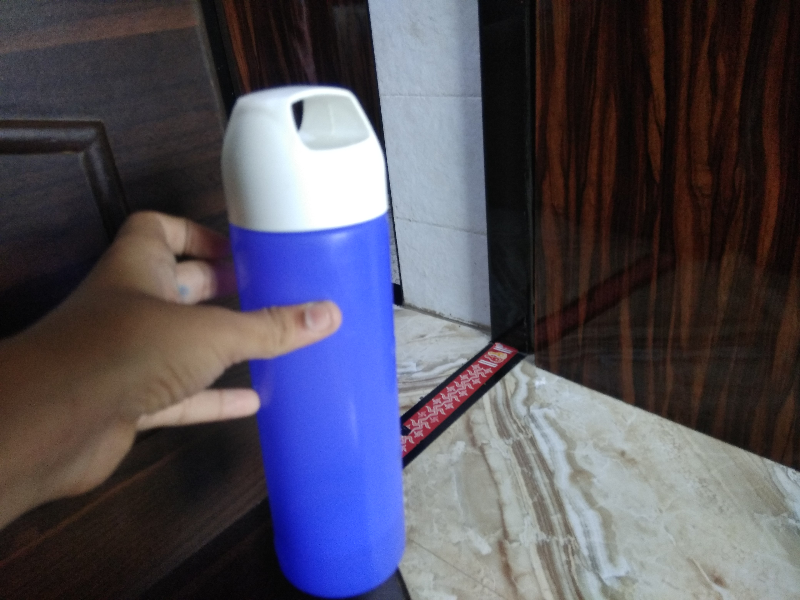
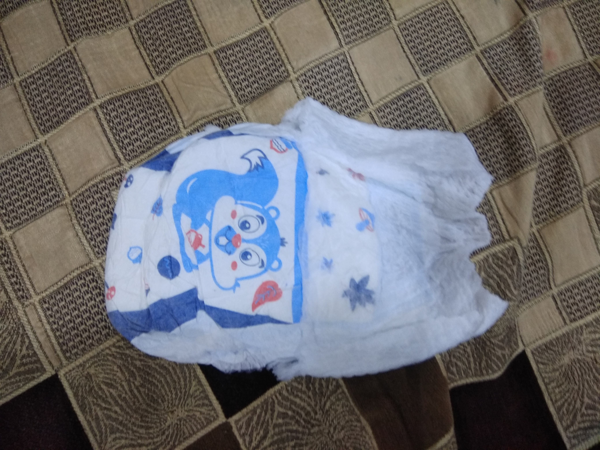
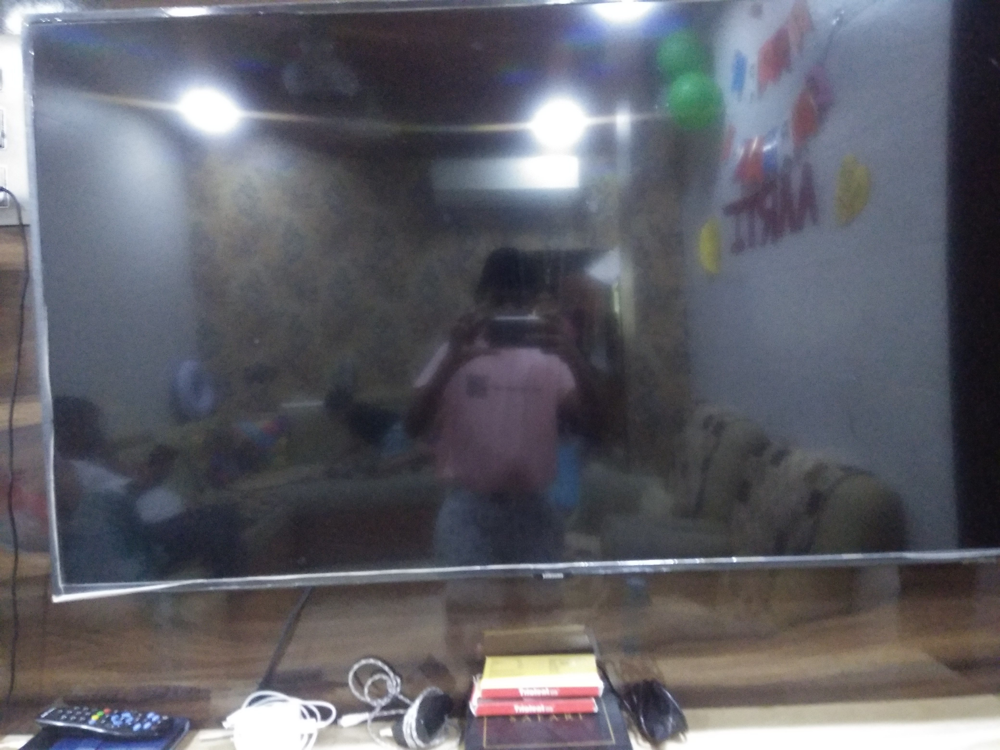
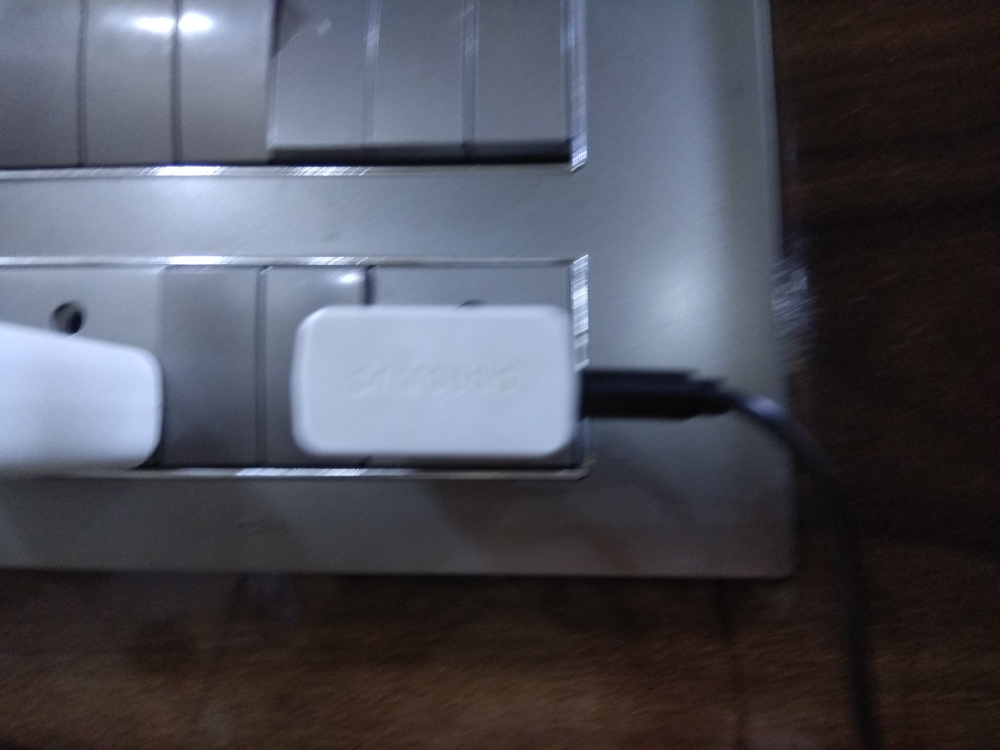
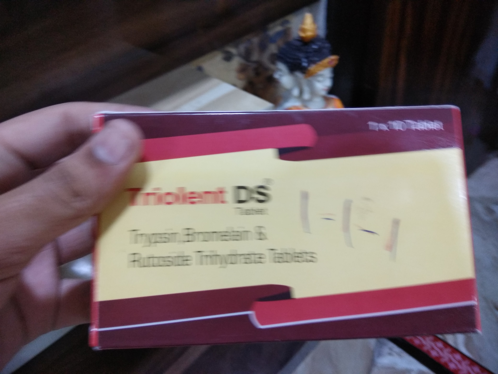
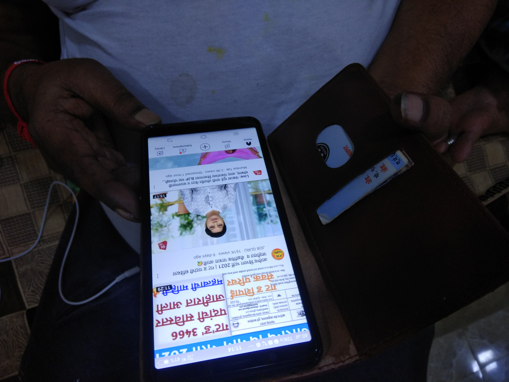

Image Identification App

- TEST IMAGE - 
- TEST IMAGE -
- TEST IMAGE - 
- TEST IMAGE - 
- TEST IMAGE - 
-
TEST IMAGE -

- TEST IMAGE - 
- TEST IMAGE - 
OUTPUT ON-
Mircrosoft Azure (wolfram project) - BottleOUTPUT ON-
Mobilenet model - water bottleOUTPUT ON-
Mircrosoft Azure (wolfram project) - Photo frameOUTPUT ON-
Mobilenet model - Painting of someoneOUTPUT ON-
Mircrosoft Azure (wolfram project) - DiaperOUTPUT ON-
Mobilenet model - Babys wearOUTPUT ON-
Mircrosoft Azure (wolfram project) - BoxOUTPUT ON-
Mobilenet model - TelevisonOUTPUT ON-
Mircrosoft Azure (wolfram project) - diaryOUTPUT ON-
Mobilenet model - logOUTPUT ON-
Mircrosoft Azure (wolfram project) - ChargerOUTPUT ON-
Mobilenet model - Mobile charger , charger to charge mobileOUTPUT ON-
Mircrosoft Azure (wolfram project) - small boxOUTPUT ON-
Mobilenet model - Medicine BoxOUTPUT ON-
Mircrosoft Azure (wolfram project) - MobileOUTPUT ON-
Mobilenet model - cell or smart phoneThis is what I think
As per the results, I conclude that Mobilenet is more accuarte than microsoft azure as out of 5 3 are given correct by Mobile net and azure just 2. Mobile net wins the contest in the case studies .